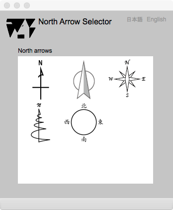

North Arrow Selector
方位記号の選択
はじめに
このページは，地図に表示する方位記号を選択するためにあります．方位記号は地図の内容にあうものを選択すべきですが，ここに示されるものの中から，選択することができます．
North arrow selector

図1. 方位記号選択用のページ
FIELDS
North arrows (選択可能)
ここに示されている記号から，適当なものをクリックすると，それが Map Editor の画面に反映される．
BUTTONS
日本語
今あなたが読んでいるドキュメントが表示されます．
English
You can read the tutorial written in English.